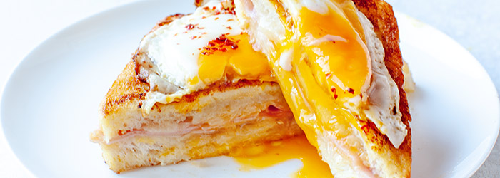

Croque Madame Recipe

Description
A classic croque madame makes the perfect French-inspired brunch or lunch dish. Once you try this, it will be hard to have "just" a ham and cheese sandwich again. Don't cheat and use Swiss cheese, this deserves the real thing! Using Gruyère cheese will make all the difference.
Ingredients
- Meat
- Onion and garlic
- Tomato products
- Sugar
- Spices and seasonings
- Lasagna noodles
- Cheeses
- Egg
Steps to make
- Make the meat sauce
- Cook the noodles
- Make the ricotta mixture
- Layer the lasagna according to the recipe instructions
- Cover with foil and bake
- Let the lasagna rest before serving
Go back home